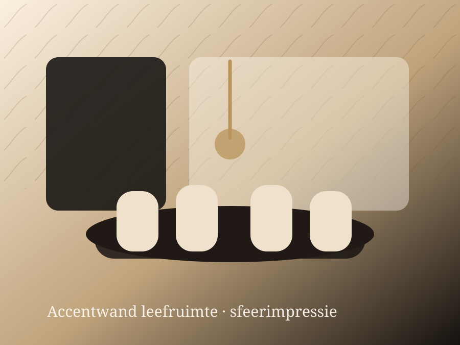

Over Decoz
Premium vakwerk voor particuliere woningen.
Decoz Wandafwerking is gespecialiseerd in stijlvol en strak behangwerk voor woningen in Etten-Leur en omgeving.
Decoz Wandafwerking
Rustig, zorgvuldig en professioneel.
Decoz richt zich op behangwerk waarbij uitstraling, voorbereiding en nette afwerking samenkomen. U krijgt geen standaard aanpak, maar een resultaat dat past bij uw woning en interieur.
Wij werken zorgvuldig in bewoonde woningen, houden rekening met uw ruimte en streven naar een nette oplevering.
Etten-Leur en omgevingOfferte op maatAdvies waar nodig

Vrijblijvende offerte
Klaar voor stijlvol behangwerk in uw woning?
Vraag vrijblijvend een offerte aan via WhatsApp. U kunt direct foto's van de ruimte, het behang en uw wensen meesturen.